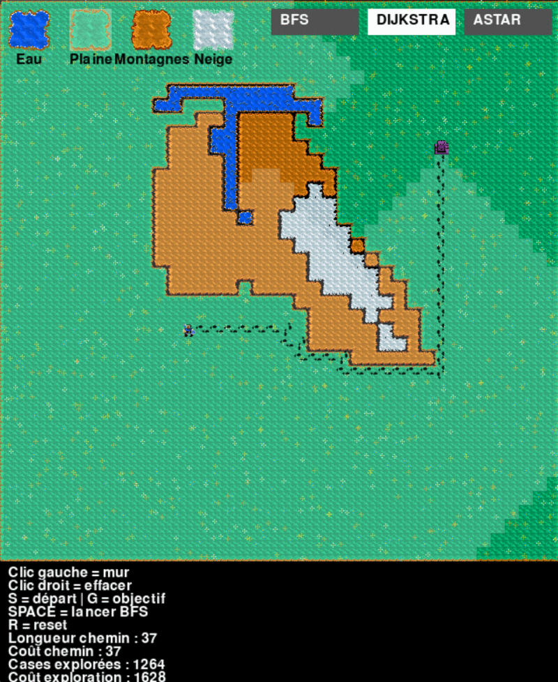
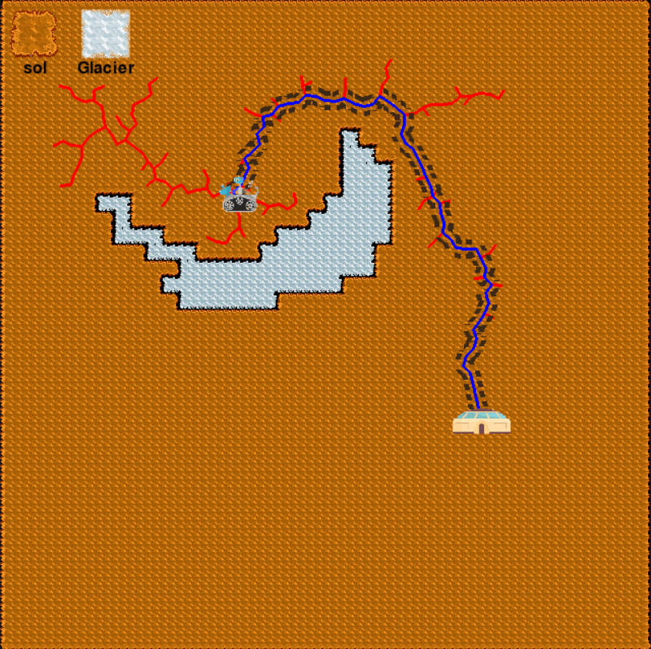
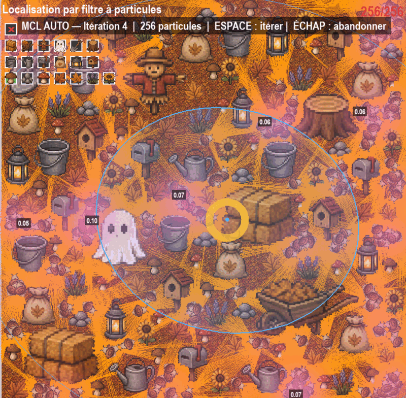
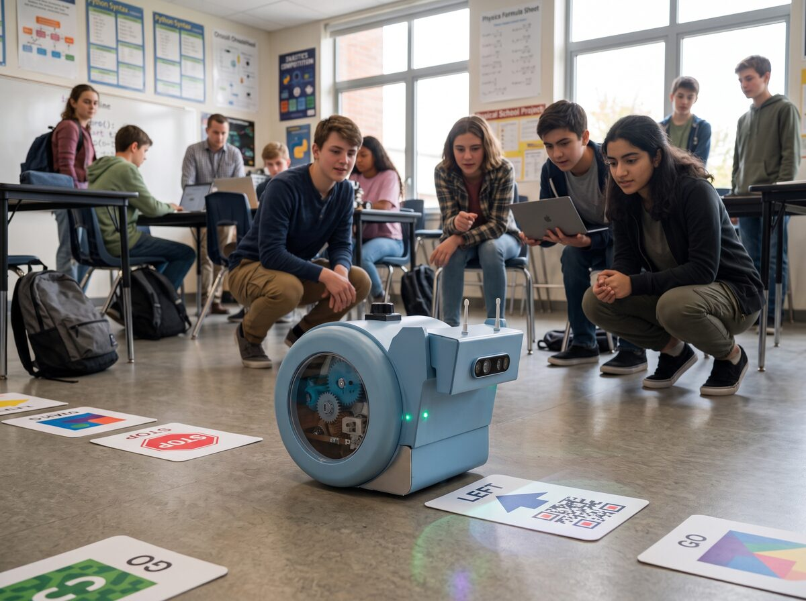

Les ateliers
Chaque atelier explore un algorithme réel de la robotique et de l'IA, à travers un logiciel dédié que les élèves manipulent eux-mêmes. L'enseignant ou le référent dispose d'une feuille de route pas à pas ; aucun prérequis en robotique n'est nécessaire.
Recherche de chemin
-

Le chemin le plus court · 9–12 ans · 1 h à 1 h 30
Les élèves dessinent leur propre carte — eau, plaine, montagnes, neige — puis regardent trois algorithmes rivaliser pour trouver le meilleur chemin.
Algorithmes : BFS, Dijkstra, A*
-

Mission sur Mars · 9–12 ans · 45 min
Un rover, un glacier, une base à rejoindre : comment chercher un chemin quand le terrain n'est plus découpé en cases ?
Algorithme : RRT (espace continu)
Apprentissage et évolution
-
L'escargot et la pomme · 13–15 ans · 1 h 30
Dans le Simulateur Escargot, un escargot virtuel apprend seul à atteindre une pomme — un comportement que personne ne lui a programmé.
Algorithmes : apprentissage par renforcement — DDQN, PPO, SAC
-
Des escargots qui évoluent · 13–15 ans · 1 h
Même tâche, méthode radicalement différente : une population d'escargots s'améliore de génération en génération.
Algorithme : algorithmes génétiques
Localisation et vision
-

Le robot fantôme · 16–17 ans
Un robot perdu sur une carte construite par les élèves retrouve sa position grâce à un nuage de particules qui se resserre à chaque observation.
Algorithme : localisation de Monte-Carlo (filtre à particules)
-
Lire l'écriture à la main · 16–17 ans · 3 × 1 h 30
Du premier neurone au réseau convolutif : les élèves entraînent un réseau à reconnaître des chiffres manuscrits, puis ouvrent la boîte noire.
Algorithmes : MLP, CNN, ResNet (notebooks Jupyter, base MNIST)
En préparation — sur le robot snAIl

Les prochains ateliers quittent le simulateur pour le robot lui-même : ci-dessus, snAIl navigue en classe en lisant des cartes posées au sol avec sa caméra.
-
Cartographier au laser · en préparation
Balayer la pièce avec le LiDAR de snAIl et construire, en vrai, la carte que le robot utilisera ensuite pour planifier ses trajets.
Capteur : LiDAR
-
Voir en relief · en préparation
Deux objectifs, une profondeur : mesurer les distances avec la caméra 3D stéréo de snAIl, comme le fait une paire d'yeux.
Capteur : caméra 3D stéréo
-
Parler au robot · en préparation
Commander snAIl à la voix et découvrir les modèles qui relient voir, comprendre et agir — directement à bord du robot.
IA embarquée : voix, petits modèles de langage (SLM), modèles vision-langage-action (VLA)
Chaque atelier existant s'appuie sur un support pédagogique complet (feuille de route pour l'enseignant, lexique, questions de fin de cours). Pour l'organisation d'une séance, voir les leçons.